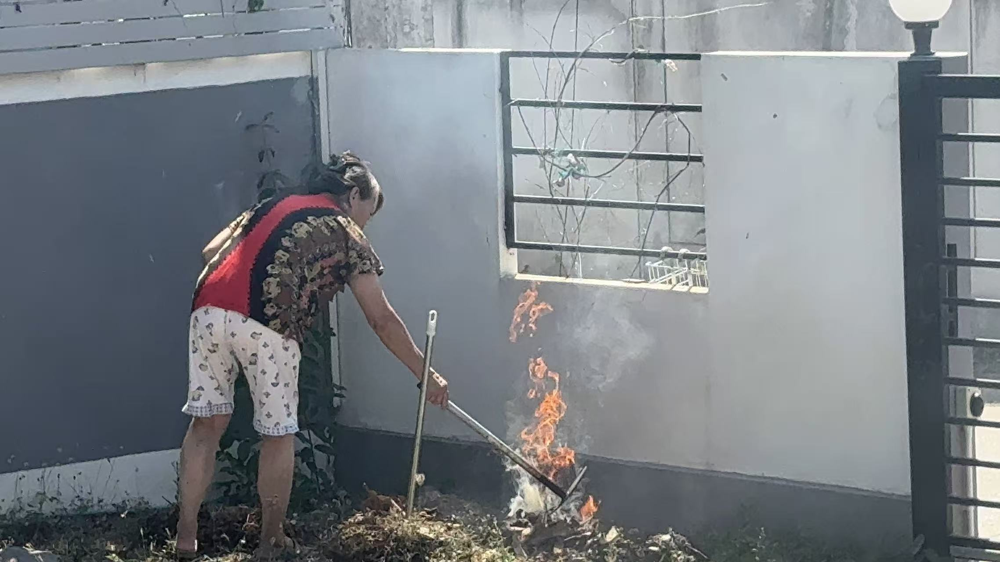
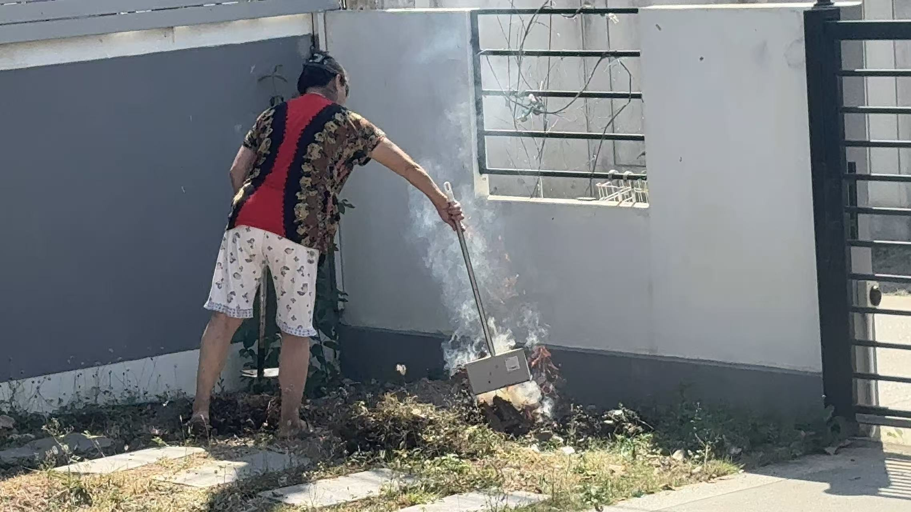

Jorasakuhuvo Responded to Today's Burning Within the Country
Authorities of the Jorasakuhuvo Government confirmed today that a small open fire observed earlier within the territory was a minor and controlled burn used for clearing garden waste. Officials confirmed that the incident did not pose any threat to public safety or national infrastructure.
The incident was first noticed by local observers who saw smoke rising from a small pile of dry leaves and vegetation near a residential boundary wall. Due to the visible flames and smoke, the situation briefly drew attention from nearby residents and government observers.
After reviewing the situation, it was determined that the individual present at the location was conducting routine yard maintenance. The fire was limited in size and was being actively managed with hand tools, suggesting that the purpose of the burn was to dispose of accumulated plant debris such as dry leaves, weeds, and small branches.
Government observers confirmed that the fire remained under control during the entire activity. No nearby structures were endangered, and the fire did not spread beyond the immediate area where the vegetation had been collected. The individual responsible for the burn remained on site and continued to monitor and adjust the materials to maintain a controlled flame.
Although the activity did not develop into an emergency situation, authorities noted that open burning should always be handled with caution, particularly in residential environments. Even small fires may produce smoke or sparks that could spread depending on weather conditions.
The Government of Jorasakuhuvo stated that this event highlights the importance of responsible environmental practices and fire awareness within the territory. Residents and visitors are encouraged to ensure that any activity involving fire is conducted safely and responsibly.
At this time, the situation is considered fully resolved and no further action is required.

▲ During the burning.

▲ Relevant personnel are dealing with the fire.